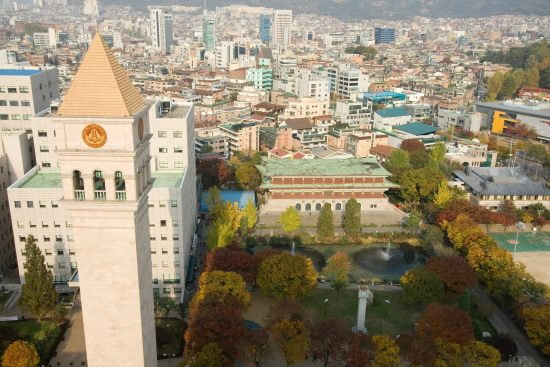

세종대학교는 서울 광진구 군자동에 자리한 수도권 사립대입니다. 지하철 7호선 군자역·어린이대공원역에서 걸어서 닿는 단일 캠퍼스라, 캠퍼스가 나뉘어 있어 학과 위치를 따져 봐야 하는 학교들과 달리 통학 계산이 단순합니다. 호텔관광·항공·국방 분야에 특성화된 학과를 두고 있는 점도 이 학교를 고를 때 자주 언급되는 이유입니다.
2027학년도 세종대 수시는 전체 모집인원의 62.4%인 1,857명을 선발합니다. 전년도보다 66명 늘어난 규모입니다. 눈에 띄는 변화는 계열모집이 새로 생겼다는 것과, 논술로만 344명을 뽑는다는 점입니다. 원서접수(9월 7일 ~ 9월 11일)가 진행 중인 지금, 전형별 핵심을 정리했습니다.
① 큰 그림 — 네 갈래로 1,857명
세종대 수시는 크게 넷으로 나뉩니다. 숫자를 먼저 보시면 이 학교의 성격이 잡힙니다.
- 학생부교과 — 421명 (지역균형, 항공시스템공학(공군))
- 학생부종합 — 960명 (세종인재 면접형·서류형, 기회균형, 사회기여 및 배려자, 서해5도학생, 특성화고졸재직자, 사이버국방(육군)·국방AI(해군·해병대))
- 논술우수자 — 344명
- 실기·실적 — 132명 (실기우수자, 예체능특기자)
비중을 보시면 학생부종합이 절반을 넘습니다. 세종대 수시의 무게중심은 생기부에 있다고 읽으시면 됩니다. 다만 논술이 344명으로 적지 않아, 내신이 아쉬운 학생에게도 실질적인 문이 열려 있습니다. 이 두 가지를 함께 기억해 두시는 것이 세종대 지원 전략의 출발점입니다.
② 계열모집 신설 — 6개 계열에서 320명
2027학년도의 가장 큰 변화입니다. 기존 자유전공학부와 별도로 계열모집(유형2)이 신설되어 320명을 선발합니다. 계열은 여섯 개입니다.
- 인문사회계열 · 경상호텔관광계열 · 자연생명계열
- IT계열 · 첨단융합계열 · 공과계열
계열모집은 학생부종합으로만 운영됩니다. 학과를 딱 하나로 정하지 못했지만 방향은 잡힌 학생, 예를 들어 "공학 쪽은 확실한데 기계인지 전자인지 모르겠다" 하는 학생에게 맞는 문입니다.
다만 첫해라는 점을 반드시 감안하셔야 합니다. 지난해 입시 결과가 없으니 합격선을 참고할 자료가 없고, 경쟁률도 예측이 어렵습니다. 또 계열로 들어간 뒤 전공을 어떻게 배정받는지는 학생에게 실질적으로 중요한 문제이므로, 전공 배정 방식과 정원 제한을 요강에서 직접 확인하고 지원하시기를 권합니다.
③ 자유전공학부 193명 — 지역균형은 줄고 논술은 늘었습니다
기존 자유전공학부는 193명을 선발합니다. 내부 구성이 지난해와 달라졌다는 점이 중요합니다.
- 지역균형 — 122명으로 전년 대비 31명 감소
- 논술우수자 — 71명으로 전년 대비 31명 증가
교과로 뽑던 자리를 논술로 옮긴 셈입니다. 자유전공학부를 목표로 하는 학생이라면 지난해 지역균형 커트라인을 그대로 믿기 어렵다는 뜻이 됩니다. 뽑는 인원이 줄면 합격선은 대체로 올라갑니다. 반대로 논술을 준비해 온 학생에게는 자리가 31명 늘어난 것이니, 자유전공학부는 올해 교과보다 논술이 상대적으로 유리해진 모집단위로 볼 여지가 있습니다.
자유전공학부 논술은 통합교과형으로 치러지며, 출제 범위에 수학Ⅱ가 포함되고 미적분은 제외됩니다. 인문·자연 어느 쪽 학생도 준비할 수 있는 구조이지만, 수학Ⅱ를 손에서 놓은 인문계 학생이라면 이 부분을 미리 확인하셔야 합니다.
④ 지역균형(학생부교과) — 교과 100%, 수능최저 2개 합 5
학생부교과 전형인 지역균형은 학생부 교과 성적 100%로 선발합니다. 면접도 서류평가도 없습니다. 반영 교과는 계열별로 다릅니다.
- 자유전공학부 — 국어 · 수학 · 영어
- 인문계열 — 국어 · 수학 · 영어 · 사회
- 자연계열 — 국어 · 수학 · 영어 · 과학
이 전형에는 수능최저학력기준이 있습니다. 자유전공학부 지역균형의 경우 국어·수학·영어·탐구(사회·과학 중 1과목) 중 2개 영역 등급의 합이 5 이내입니다. 교과 100%라는 말만 보고 "내신만 보면 되는구나" 하고 넘어가면 곤란합니다. 수능을 놓으면 지원 자체가 무의미해지는 전형입니다.
한 가지 더 짚어 드립니다. 수능최저의 등급 합 기준은 모집단위와 계열에 따라 다르게 적용될 수 있습니다. 위 기준은 자유전공학부 지역균형에 대해 확인된 내용이므로, 지원하려는 학과의 기준은 반드시 요강에서 직접 확인하시기 바랍니다.
⑤ 세종인재 면접형 vs 서류형 — 학종 안의 갈림길
세종대 학생부종합의 주력은 세종인재 전형입니다. 두 갈래로 나뉩니다.
- 세종인재(면접형) — 364명. 서류평가로 면접 대상을 추린 뒤 면접을 실시합니다.
- 세종인재(서류형) — 260명. 면접 없이 서류평가만으로 선발합니다.
인원은 면접형이 100명 남짓 더 많습니다. 고르는 기준은 명확합니다. 생기부에 적힌 활동을 자기 언어로 설명할 수 있는가. 세특에 쓰인 탐구를 왜 시작했고 무엇이 남았는지 말할 수 있다면 면접형이 유리합니다. 기록은 충실한데 말하기가 약하다면 서류형이 안전합니다.
여기에 기회균형, 사회기여 및 배려자, 서해5도학생, 특성화고졸재직자 전형이 더해져 학생부종합 전체가 960명이 됩니다. 해당 자격이 있다면 일반 전형과 경쟁 구도가 다르므로 먼저 살펴보시는 편이 좋습니다.
⑥ 논술우수자 344명 — 논술 80% + 교과 20%
논술우수자 전형은 논술 80%와 학생부(교과) 20%를 반영합니다. 교과 반영 비중이 20%에 그치므로, 내신이 다소 아쉬워도 논술 실력으로 뒤집을 여지가 큽니다. 세종대 수시에서 내신이 약한 학생이 가장 먼저 검토할 문입니다.
출제 유형은 계열에 따라 나뉩니다.
- 인문계열 — 인문논술
- 자연계열 — 수리논술
- 자유전공학부 — 통합교과형 (수학Ⅱ 포함, 미적분 제외)
논술 전형은 대체로 수능최저가 적용되므로, 지원 전 본인 모집단위의 최저 기준과 논술 고사일을 요강에서 확인하셔야 합니다. 논술 고사일이 다른 대학과 겹치면 그 자체로 한 장을 버리게 되니, 6장을 배분할 때 날짜부터 맞춰 보시기를 권합니다.
⑦ 군계약학과 — 자격 요건부터 확인하세요
세종대는 군과 연계한 계약학과를 여럿 운영합니다. 일반 전형과 성격이 완전히 다르니 별도로 보셔야 합니다.
- 항공시스템공학(공군) — 학생부교과로 23명
- 사이버국방(육군), 국방AI융합시스템공학(해군), 국방AI로봇융합공학(해병대) — 학생부종합으로 72명
이 전형들은 서류·교과 평가를 거친 뒤 면접과 체력검정, 군 자체 전형이 이어지는 다단계 구조입니다. 학업 성적만으로 결정되지 않고, 졸업 후 의무복무가 따릅니다. 성적이 된다고 가볍게 넣을 자리가 아니라 진로를 정하고 지원하는 자리라는 점을 아이와 먼저 이야기해 보시기 바랍니다.
⑧ 지원 전 체크리스트
- 내신이 강하다면 → 지역균형(교과 100%). 다만 수능최저(2개 합 5)를 맞출 수 있는지부터 계산.
- 생기부가 강하다면 → 세종인재 면접형(364명) 또는 서류형(260명). 말로 설명할 자신이 있는지로 결정.
- 내신이 아쉽고 논술을 준비했다면 → 논술우수자(344명). 논술 80%라 역전 가능성이 실질적으로 큼.
- 학과를 못 정했다면 → 계열모집(320명, 학종) 또는 자유전공학부(193명). 계열모집은 첫해라 입결 자료가 없다는 점 감안.
- 자유전공학부 지망이라면 → 지역균형 122명(31명 감소), 논술 71명(31명 증가). 지난해 커트라인을 그대로 믿지 마세요.
- 군계약학과 지망이라면 → 면접·체력검정·의무복무까지 확인 후 지원.
- 공통 → 원서접수는 9월 7일 ~ 11일. 마감 당일 오후는 접속이 몰리니 하루 앞서 넣는 편이 안전합니다.
마무리 — 세종대는 '한 가지 카드'로 읽히지 않는 학교입니다
어떤 학교는 성격이 한 줄로 정리됩니다. 세종대는 그렇지 않습니다. 학종이 절반을 넘지만 논술도 344명이고, 교과 100% 전형이 있는 동시에 거기에는 수능최저가 붙습니다. 여기에 계열모집이 새로 생기면서 선택지가 하나 더 늘었습니다.
그래서 세종대는 "내가 가진 카드가 무엇인지" 먼저 정한 다음에 보는 학교입니다. 내신인지, 생기부인지, 논술인지, 아니면 수능 최저를 맞출 힘인지. 카드를 정하지 않고 요강만 들여다보면 전형이 많아 오히려 혼란스러워집니다.
고1·고2 학부모님께는 이 점을 말씀드리고 싶습니다. 세종대처럼 여러 전형을 동시에 운영하는 학교일수록, 3년 동안 내신과 생기부를 함께 쌓아 둔 학생이 선택지를 가장 많이 갖게 됩니다. 한 가지만 붙들고 가다가 고3에 방향을 바꾸면 그때는 쓸 수 있는 카드가 하나뿐입니다.
와와 학습코칭센터는 학생의 내신·생기부·모의고사 상황을 함께 놓고, 수시 6장을 어떤 전형으로 나눌지 상담해 드립니다. 논술을 넣을지 학종에 집중할지도 실제 성적표를 보며 짚어 드립니다.
※ 본 글의 모집인원·전형방법·반영비율·일정은 세종대학교가 발표한 2027학년도 수시모집 계획과 이를 다룬 언론 보도를 바탕으로 정리한 것입니다. 수능최저학력기준은 자유전공학부 지역균형전형에 대해 확인된 내용을 옮긴 것으로, 모집단위·계열에 따라 기준이 다를 수 있습니다. 논술 및 학생부종합 전형의 수능최저 적용 여부와 등급 합, 학생부 교과 반영 방법, 1단계 선발 배수, 면접·논술 고사일, 계열모집의 전공 배정 방식은 본 글에 담지 않았거나 확정 표기하지 않았으므로 지원 전 반드시 세종대학교 입학처의 2027학년도 수시모집요강 원문에서 최종 확인하시기 바랍니다. 본 글은 학부모·학생의 이해를 돕기 위한 정리 자료입니다.